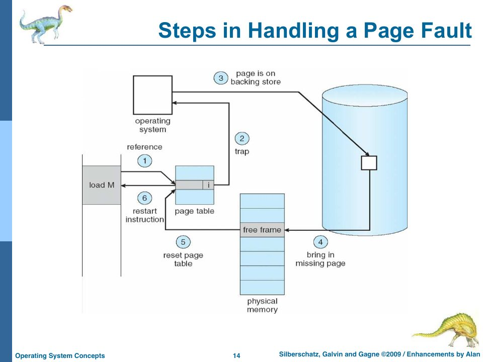
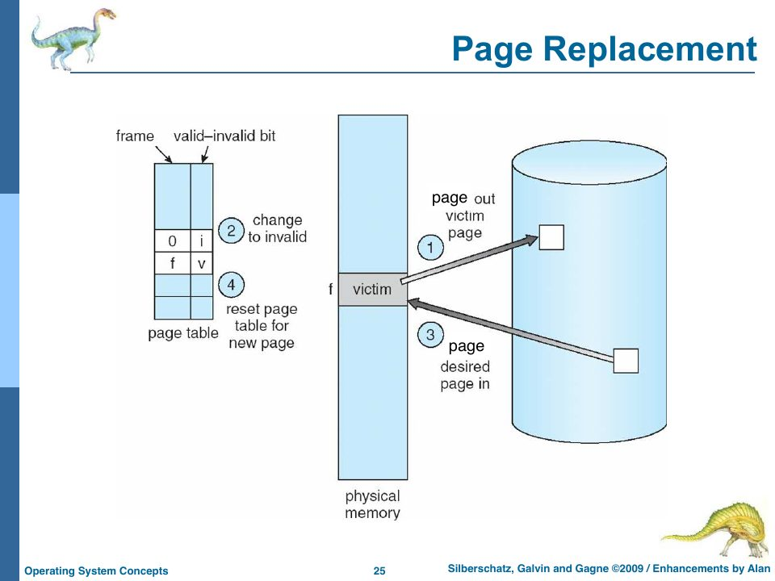
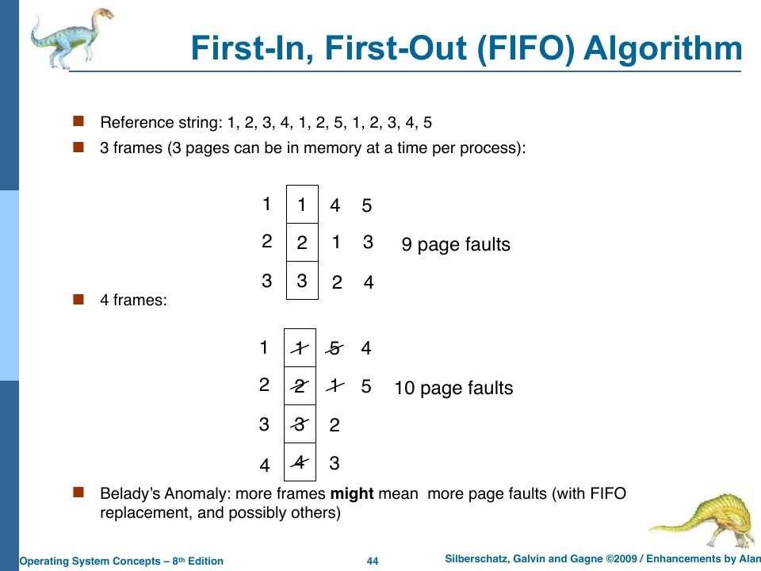

Demand Paging and Page Replacement
Slides: Chapter 9, “Virtual Memory,” pp. 649–716. Project Part Four’s final challenge: “Add demand paging in place of swapping.”
The last chapter of the course, and the last chapter here, puts every layer of the system to work at once: the CPU must stop mid-instruction, the memory accessor must notice a missing page, the kernel must handle a new kind of trap, the memory manager must pick a victim, the disk must store pages, and the scheduler must cope with a process that’s waiting for one. It’s the project’s “final challenge,” which rObSen didn’t attempt. So this chapter teaches the theory, checks the replacement algorithms with code, and then lays out the design for rObSen in enough detail to build.
Virtual memory
“Up till now we have been allocating memory for the entire process. Do we have to?” (slide p. 651). Virtual memory separates the logical address space from physical memory, so that “only part of the program needs to be in memory at any one time for execution,” and the logical address space can be much larger than physical memory (p. 652). Side benefits: address spaces can be shared (one copy of a shared library mapped into many processes, p. 655), and process creation gets cheaper (copy-on-write, below).
Demand paging
“Q: When is it good to be lazy? A: When swapping memory” (slide p. 656). A lazy swapper “never swaps a page into memory unless page will be needed.” Since it deals in pages rather than whole processes, it gets a new name: “A swapper that deals with pages is a (wait for it…) pager.”
The mechanism reuses Chapter 18’s valid–invalid bit with a broader meaning: valid means “legal and in memory”; invalid means “illegal, or legal but currently on disk” (p. 658). The OS keeps a second table (per process, in the PCB) to tell those apart.

Touching an invalid page causes a page fault, a trap to the OS (slide p. 661):
- Check the process’s table: an illegal reference aborts the process; a legal one continues.
- Get an empty frame.
- Read the page from disk into the frame.
- Update the tables.
- Set the valid bit.
- Restart the instruction that caused the fault.
The division of labour (slide p. 663, with Alan’s correction that the textbook “misnames” the hardware part): the hardware (the memory accessor) maps pages to frames and checks valid bits; the OS (the memory manager) does the swapping, allocation, page replacement, and table updates.
Pure demand paging starts a process with no pages in memory; its very first instruction fetch faults (p. 664). One instruction can fault more than once (the instruction on one page, its operand on another, its data on a third), but locality of reference (“scope stickiness,” in Alan’s phrase) makes that rare: programs tend to work on a small set of pages for a while, then move on.
Copy-on-write and zero-fill
When a process forks, the child’s pages start out identical to the parent’s. Copy-on-write (pp. 665–669) lets them share the physical pages until one of them writes, and only then copies the page being written. New pages are handed out from a pool of zeroed-out pages, “zero-fill on demand,” so no process can read another’s leftover data. (vm_stat on a Mac shows both counters; on the slide’s machine, 75 million copy-on-write faults and 1.7 billion zero-filled pages.) rObSen’s memory manager already zero-fills partitions on load and release (Chapter 11), which is the same principle at a coarser grain.
Page replacement
What if there’s no free frame (slides pp. 670–675)? Pick a victim page, write it out, and reuse its frame. That costs two disk transfers per fault, unless the victim hasn’t changed since it was loaded. A modify (dirty) bit, set by the hardware on any write to the page, lets the OS skip writing back clean pages.

Which victim? “We want the algorithm that gives us the lowest page-fault rate,” evaluated by running it on a reference string of page numbers and counting faults (p. 676). The slides use
1, 2, 3, 4, 1, 2, 5, 1, 2, 3, 4, 5
- FIFO: evict the page that’s been in memory longest.
- Optimal (OPT): evict the page that won’t be used for the longest time. Unbeatable, and impossible to implement (it needs the future), but it’s the yardstick (p. 695).
- LRU (least recently used): evict the page whose last use is oldest. Implemented with a timestamp per page, copied from the clock on every reference (p. 696). It approximates OPT by assuming the recent past predicts the near future.
- MRU, LFU, MFU: most recently used, least or most frequently used. “Neither [LFU nor MFU] are in common use. They are expensive [and] do not approximate the optimal case very well” (p. 698).
src/code/sims/paging.ts implements FIFO, OPT, and LRU as interchangeable classes (Chapter 20a explains the design):
$ tsc --target es2022 paging.ts && node paging.js
FIFO 3 frames: 9 faults 4 frames: 10 faults
OPT 3 frames: 7 faults 4 frames: 6 faults
LRU 3 frames: 10 faults 4 frames: 8 faults
These match the slides: 9 faults for FIFO with 3 frames (p. 690), 6 for OPT with 4 (p. 695).

Look at FIFO: more frames, more faults. That’s Belady’s anomaly (p. 692). “If we had more frames, we’d have fewer page faults. Right?” Not with FIFO. OPT and LRU are stack algorithms: the set of pages in memory with n frames is always a subset of the set with n + 1, so adding frames can never hurt them. FIFO has no such property.
7 0 1 2 0 3 0 4. Faults on 7, 0, 1 (cold), 2 (evict 7, least recently used), 0 hits, 3 (evict 1), 0 hits, 4 (evict 2). Total: 6 faults. Work it the way the slides do: a column per reference, the frames' contents underneath, an F where a fault occurs.
The effective access time with demand paging is dominated by the fault rate p: EAT = (1 − p) × memory access + p × fault service time. With 200 ns memory and an 8 ms fault, even p = 0.001 gives EAT ≈ 8.2 μs, a 40× slowdown. To keep the slowdown under 10%, faults must be rarer than about 1 in 400,000 accesses. Locality is what makes that possible.
Allocating frames
How many frames does each process get (slides pp. 700–702)? Each needs a minimum (the IBM 370’s MOVE instruction could touch 6 pages). Beyond that: equal allocation (103 frames, 5 processes: 20 each, 3 spare), proportional allocation (by process size), or priority allocation.
Global replacement lets a faulting process take a frame from anyone; local replacement restricts it to its own frames (p. 703). Global is more efficient when it works, and risky when it doesn’t.
Thrashing
When processes don’t have enough frames, they fault constantly, each fault steals a frame another process needs, the disk queue grows, and CPU utilization collapses. The OS, seeing low utilization, admits more processes, which makes it worse. “This is thrashing: all paging and no doing” (slides pp. 704–707).
The cure is to give each process the frames its current locality needs. The working-set model (pp. 709–712) estimates that: the working set is the set of pages referenced in the last Δ references (the working-set window). Too small a Δ misses part of the locality; too large spans several. If the sum of all working-set sizes D exceeds the available frames m, the OS suspends a process rather than letting everyone thrash. The working set also answers the question left open on slide p. 658, how the pager “guesses at which pages will be used”: on swap-in, load the working set. Windows does a version of this with per-process working-set minimums and maximums, trimming working sets when free memory runs low (pp. 713–714).
The final challenge: demand paging in rObSen
Chapter 18 designed plain paging for rObSen (32-byte pages, 8 per process, 24 frames) and hit a wall: a 22-byte program keeps its counter on page 1, which was never loaded. Demand paging is the way through. Here is the design, layer by layer, from the bottom up.
Host: the memory accessor raises a page fault instead of failing:
class PageFault extends Error {
constructor(public readonly page: number, public readonly write: boolean) {
super(`page fault on page ${page}`);
}
}
private translateAddress(address: number, operation: string): number {
if (!_CPU?.isExecuting || !_CurrentProcess) return address;
if (address < 0 || address > 0xff) this.handleMemoryViolation(/* … */);
const page = address >> 5;
const entry = _CurrentProcess.pageTable[page];
if (!entry.valid) throw new PageFault(page, operation === "write");
entry.referencedAt = _CpuCycleCount; // for LRU
if (operation === "write") entry.dirty = true; // the modify bit
return entry.frame * 32 + (address & 0x1f);
}
Host: the CPU must make every instruction restartable (slide p. 661, step 6). A fault can strike in the middle of an instruction: after the opcode has been fetched and the PC advanced, while reading the second byte of an address. So cycle remembers where the instruction began, and on a fault it puts the PC back and asks the kernel for help:
public cycle(): void {
// … guards …
const startPc = this.PC;
try {
const opcode = this.fetchByte();
// … decode and execute, exactly as now …
} catch (e) {
if (!(e instanceof PageFault)) throw e;
this.PC = startPc; // undo the partial instruction
this.isExecuting = false; // this process can't continue until the page arrives
_KernelInterruptQueue.enqueue(new Interrupt(PAGE_FAULT_IRQ, [e.page, e.write]));
return;
}
// … save registers to the PCB, tick the timer …
}
For the 6502a subset, undoing the PC is enough, because no instruction writes memory before it has read everything it needs. (INC reads, then writes the same address, so a fault can only occur on the read; STA faults on its only write before changing anything.) SYS with X = 2 is the one to think about, since it has a visible side effect: if it printed each character as it read it, a fault on the string’s second page would print the first part, roll back, and print it again on restart. rObSen’s opSystemCall happens to get this right already: it accumulates the whole string in output and calls putText once, after the last read. Real CPUs with more complex instructions have to work much harder at restartability.
Kernel: the page-fault ISR is a new case in krnInterruptHandler, following slide p. 661 step by step:
case PAGE_FAULT_IRQ: {
const [page, write] = params;
const pcb = _CurrentProcess;
// 1. Legal? Every page 0-7 is legal for a 6502a process; anything else was trapped earlier.
// 2. Get a frame: a free one, or a victim chosen by the replacement policy.
let frame = _FrameTable.allocate(pcb.pid);
if (frame === null) {
const victim = _ReplacementPolicy.chooseVictim(_FrameTable); // global replacement
if (victim.entry.dirty) _krnDiskDriver.writePage(victim.pid, victim.page, /* bytes */);
victim.entry.valid = false;
frame = victim.frame;
}
// 3. Read the page from disk, or zero-fill it if it has never been written out.
const bytes = _krnDiskDriver.readPage(pcb.pid, page) ?? new Array(32).fill(0);
_MemoryAccessor.writePhysical(frame * 32, bytes);
// 4–5. Update the page table and set the valid bit.
pcb.pageTable[page] = { frame, valid: true, dirty: false, referencedAt: _CpuCycleCount };
// 6. Restart: the PC was already rolled back, so just let the CPU run again.
_CPU.isExecuting = true;
break;
}
Kernel: the loader no longer copies the program into memory at all. Pure demand paging: load writes the program’s pages to the swap area on disk and creates a PCB whose page table is all invalid. The first fetch faults page 0 in; the first touch of $30 faults page 1 in, zero-filled because it was never written out. The counting program from Chapter 17 ends up occupying two frames: 64 bytes instead of 256.
Disk: pages live in the swap area, keyed by (PID, page). With the linked allocation of Chapter 15, that could be one hidden file per process (.swap3) of up to 8 pages; until then, sessionStorage keys like the current swap images will do.
Policy: _ReplacementPolicy is an object implementing one interface, so FIFO, LRU (using referencedAt), or the clock algorithm can be swapped in with one assignment. That’s Chapter 20a.
What you’d see: a process-table column for “pages resident,” a log line per fault, a fault counter per process, and, with enough processes and too few frames, thrashing you can watch: the CPU panel idling while the log fills with page faults.
Check yourself
- Why must the CPU roll back the PC on a page fault, rather than just retrying the memory access?
- With 24 frames, global replacement, and ten copies of the counting program running round-robin, about how many frames does each need, and will the system thrash?
- Why is OPT impossible in general, yet rObSen’s swapper effectively achieves it?
Answers
- Because the fault surfaces as an exception that abandons the rest of the instruction, partway through, after the PC has already moved past the opcode and maybe part of the operand. The kernel handles the fault later (on the next tick), not inside the instruction. Rolling the PC back to the instruction’s start means the whole instruction simply runs again, from scratch, once the page is present.
- Two each (page 0 for code, page 1 for the counter at
$30), 20 frames in total, so all ten working sets fit in 24 frames: no thrashing. With thirteen copies (26 frames needed), RR would keep evicting pages that are about to be needed, and it would thrash. - OPT needs to know the future reference string, which a general OS doesn’t. But under round-robin, the future order in which processes run is known: it’s the ready queue. The process just preempted is at the back, so it’s the one needed furthest in the future, and that’s the one rObSen’s swapper evicts (Chapter 17).